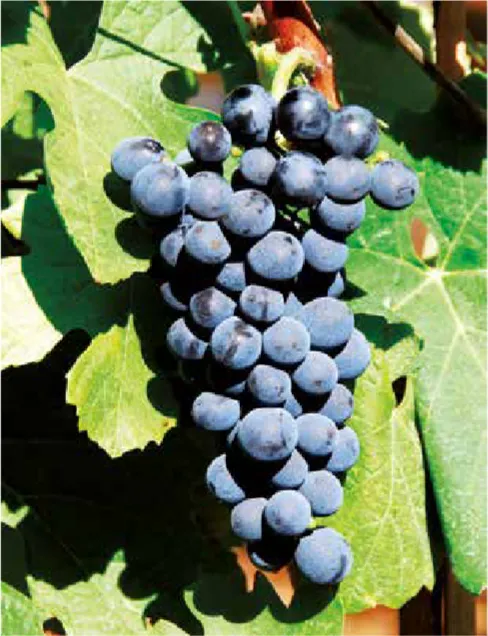

Kapitel 3 · Die portugiesischen Rebsorten
Touriga Nacional (R)
Herkunft:
Nordportugal. Von Lobo (1790) im Douro und in Unterregionen der Beira Interior verzeichnet. Von Fonseca (1790) beschrieben; größte Verbreitung: zunächst Dão und Douro, in den letzten 20 Jahren in allen Regionen des Landes. International etabliert in Spanien, Südafrika, Australien (39 ha), Kalifornien, Brasilien und Frankreich.
Weincharakter:
Sehr hohe Qualität, Leitsorte. „Das Aroma ist weich, rund und warm, erinnert an dunkelrote, fast schwarze, sehr reife Beeren, mit einigen blumigen Passagen, vor allem Veilchen, und zeigt in guten Jahren ein ausgezeichnetes süßes Parfüm, ähnlich der Zistrose“ (Almeida, 1990/98).
Regionale Einstufung:
DOC-Qualitätswein: Porto, Douro, Távora-Varosa, Bairrada, Dão, Beira Interior (alle Unterregionen), Óbidos, Alenquer, Arruda, Torres Vedras, Lagos, Lagoa, Tavira.
IPR-Wein: Valpaços, Planalto Mirandês.
Landwein: Minho, Trás-os-Montes, alle Unterregionen der Beira Interior, Estremadura, Tejo, Terras do Sado, Alentejo, Algarve.

Morphologie:
Junger Trieb (Form der Triebspitze): offen, mit karminrotem Rand und anliegenden Haaren mittlerer Dichte.
Junges Blatt: grün mit kupferfarbenen Tönen, anliegende Haare mittlerer Dichte auf der Blattunterseite.
Blüte: zwittrig.
Trieb: rot gestreift, mit leicht rötlichen Knospen.
Ausgewachsenes Blatt: klein, fünfeckig, fünflappig; mittelgrüne, flache, blasige Spreite; Unterseite mit anliegenden und aufrechten Haaren mittlerer Dichte; kurze, gerade Zähne; offene V-förmige Stielbucht, offene U-förmige Seitenbuchten.
Traube: klein, zylindrisch-konisch, mäßig dicht, Stiel mittellang.
Beere: leicht abgeflacht, mittleres Blauschwarz; mittelstarke Haut, weiches Fruchtfleisch.
Farbe (Holz): dunkelbraun.
Phänologie:
Austrieb: früh, 2 Tage nach der Castelão.
Blüte: früh, gleichzeitig mit der Castelão.
Farbumschlag: mittelfrüh, 2 Tage nach der Castelão.
Reife: mittelfrüh, eine Woche nach der Castelão. (Magalhães, 2006, persönliche Mitteilung: im Douro spät reifend, meist unter den zuletzt gelesenen Sorten, um die passende phenolische Reife zu erreichen.)
Vegetatives und weinbauliches Potenzial:
Wuchskraft: hoch.
Triebhaltung: liegend.
Fruchtbarkeitsindex: sehr hoch.
Ertrag: mit traditionellem Material sehr niedrig (3–5 t/ha); mit Klonen mittel bis hoch (8–15 t/ha). RNSV-Werte: 0,88 kg/Pflanze (Mittel von mindestens 40 Klonen, erfasst in Vila Nova de Foz Côa über 4 Jahre).
Ertragsbeständigkeit (verschiedene Jahre und Standorte): hoch bei Klonmaterial.
Homogenität der Erzeugung (zwischen den Pflanzen): hoch.
Winkler-Index (Summe der aktiven Temperaturen): 1.610 h über 10 °C bei 11 t/ha Ertrag (Montemor-o-Novo). Trotz des hohen Wärmewerts reift die Sorte in warmen Gebieten dank ihrer Widerstandskraft gegen Fäulnis und Oxidation gut.
Abiotische Empfindlichkeit: in bestimmten Lagen Magnesiummangel, Trockenschäden.
Empfindlichkeit gegenüber Pilzkrankheiten: leicht empfindlich gegenüber Falschem und Echtem Mehltau; empfindlich gegenüber Phomopsis viticola (Schwarzfleckenkrankheit).
Empfindlichkeit gegenüber Schädlingen: gering gegenüber Grüner Rebzikade und Traubenwickler.
Traubengröße: klein, teils mittel (95–250 g).
Dichte der Traube: mittel.
Beere: klein (0,9–1,8 g), je nach Klon und Umwelt verschieden, schwer abzulösen.
Haut: dick.
Kerne: mittel bis hoch (1,2–2,7 je Beere).
Erziehungssystem: passt sich gut an jedes Erziehungssystem an, auch bei Kurzschnitt, da der Ertrag immer zufriedenstellend ist. Wegen ihres aufrechten Wuchses ist die Laubarbeit einfach (maschineller Schnitt).
Qualitätsfördernder Boden: sehr fruchtbare, tiefgründige und feuchte Böden meiden, sie beeinträchtigen den Alkoholgehalt.
Günstiges Klima: bevorzugt tiefe Lagen mit guter Exposition, trocken und warm, nach Süden, Südwesten und Westen ausgerichtet, auf etwa 300 m Höhe, da sie starke Strahlung gut verträgt.
Blattdürre: weniger empfindlich als Touriga Nacional.
Haltbarkeit der Trauben nach der Reife: relativ hoch.
Önologie:
Weintyp: Qualitätswein, Dessertwein, Roséwein.
Potenzieller Alkoholgehalt: mittel (12–14 % vol.); niedrig in feuchten Zonen. (Statistischer RNSV-Wert: 11,35 % vol., Mittel von mindestens 40 Klonen in Tabuaço über 5 Jahre.)
Natürliche Säure des Mostes: mittel (3,5–4,5 g/l Weinsäure). Statistischer RNSV-Wert: 3,94 g/l (Mittel von mindestens 40 Klonen in Tabuaço über 5 Jahre).

Gesamtanthocyane: statistischer RNSV-Wert 726,67 mg/l (Mittel von mindestens 40 Klonen in Tabuaço über 5 Jahre).
Gesamtphenolindex des Mostes (bei 280 nm): 78,8. Statistischer RNSV-Wert: 31,33 (Mittel von mindestens 40 Klonen in Tabuaço über 5 Jahre).
Oxidationsrisiko des Mostes: hoch.
Farbintensität des Weins: 5,8–8,15.
Farbton des Weins: 0,66–0,73. Hell rötlich, etwas bräunlich.
Tannine: nicht analysiert.
Gesamtpolyphenolindex (bei 280 nm): 22–25.
Oxidationsrisiko des Weins: Neigung zu leichter Oxidation, daher Einsatz von Antioxidantien nötig (N. Almeida). Andere Autoren (Centro de Estudos da Régua) nennen ein etwas geringeres Risiko.
Aromaprofil: (Analyse Douro 2003.) Gesamtkonzentration freier Terpenoide (verantwortlich für blumige Aromen): 248 μg/l.
Alterungspotenzial: im Allgemeinen gut, besonders geeignet für den Fassausbau.